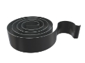

Пружины спиральные заводные
Изготовление спиральных заводных пружин на заказ партиями от 1-й штуки от 1-го дня.
Выполним по разнообразным параметрам, чертежам или образцу, фото, эскизу.
(сроки выполнения заказа обговариваются с каждым клиентом индивидуально)
- 
Изготовление и производство спиральных пружин
Спиральные заводные пружины используются с целью накопления механической энергии, необходимой для обеспечения поступательного движения. Данные пружины применяются в часовых механизмах, станкостроении, промышленном машиностроении, автомобилестроении, а также в точном приборостроении и производстве сельхозтехники.
Производственная компания ООО «Индустриал Спрингс» предлагает свои услуги по проектированию и изготовлению спиральных заводных пружин с возможностью доставки в любую точку Украины. С помощью укомплектованного собственного производства, специализированого оборудования и штата опытных специалистов, а также отличного качества продукции, мы завоевали доверие наших заказчиков. Уже более 10 лет наша компания занимается производством изделий из проволоки различных видов, от стандартных до сложнейших образцов.
Заводные спиральные пружины изготавливают из плоской стальной ленты. Для небольших пружин используется лента из холоднокатаной нержавеющей стали. Для крупных пружин используют ленту из легированных марок сталей, с последующей термообработкой пружин на заданную твёрдость. Стальная лента навивается на специальный цилиндр и оставляется в таком виде на определенный временной интервал. Срок зависит от технических параметров, соответствующих ГОСТу, или указанных в проекте, который был предоставлен заказчиком.
Заказать и купить плоские спиральные заводные пружины можно по доступной розничной и оптовой цене. Оставьте заявку через форму заказа или позвоните по одному из телефонов: 066 283 80 82, 097 305 81 85, 0532 591 590 и наши специалисты ответят на все ваши вопросы, а также проведут подробную бесплатную консультацию.